Project archive
Things I've built across data science, full-stack engineering and mobile, from course projects to hackathons and client work.
Category
Year
16 projects

Enterprise RAG Knowledge System
2025MSc thesis project with Unilever. A retrieval-augmented generation system for querying internal documents with hybrid search and LLMs.
Closed source
Automated Shelf-Life Pipeline
2025Data pipeline for Unilever that processes and analyses shelf-life data, with automated ETL and visualisation dashboards.
Closed source
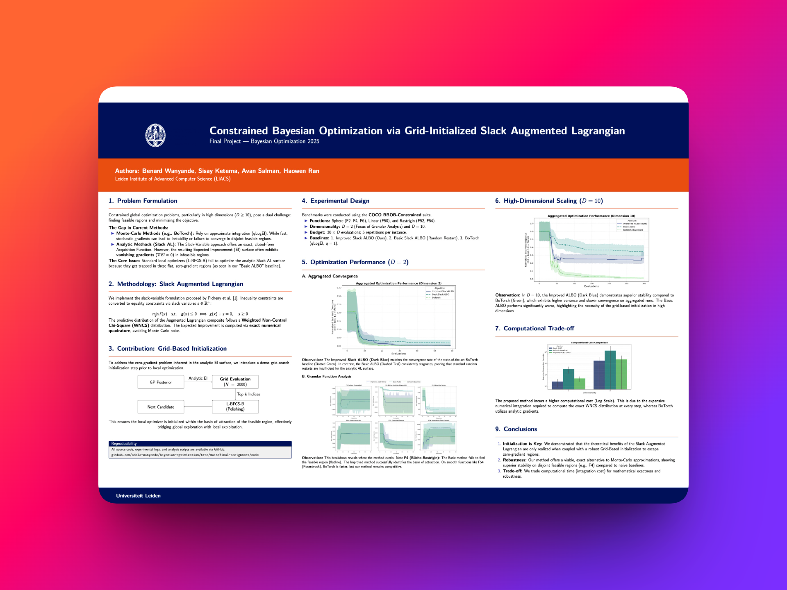
Constrained Bayesian Optimization
2025Implementation of GSALBO (Grid-Initialized Slack Augmented Lagrangian Bayesian Optimization), benchmarked on the COCO framework.
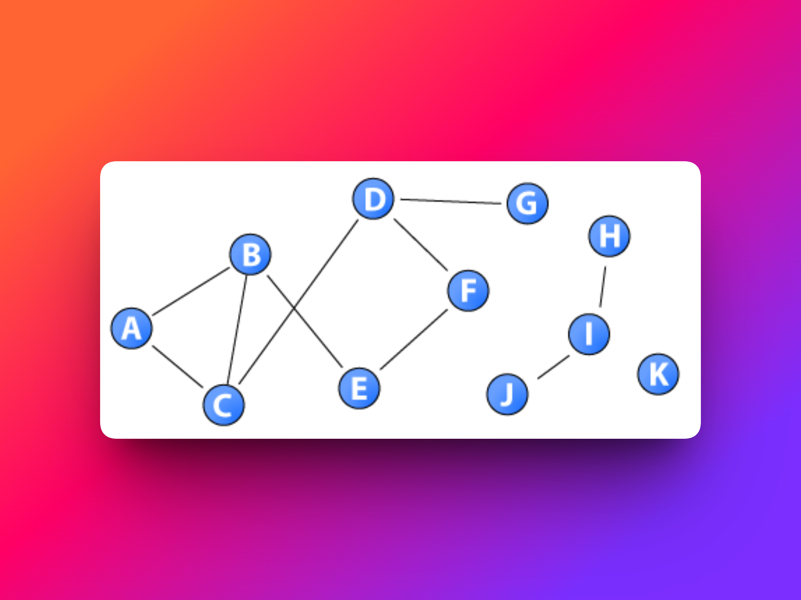
Top-k Closeness Centrality
2025Fast top-k closeness centrality algorithm with sequential experiments, built for a Social Network Analysis course.
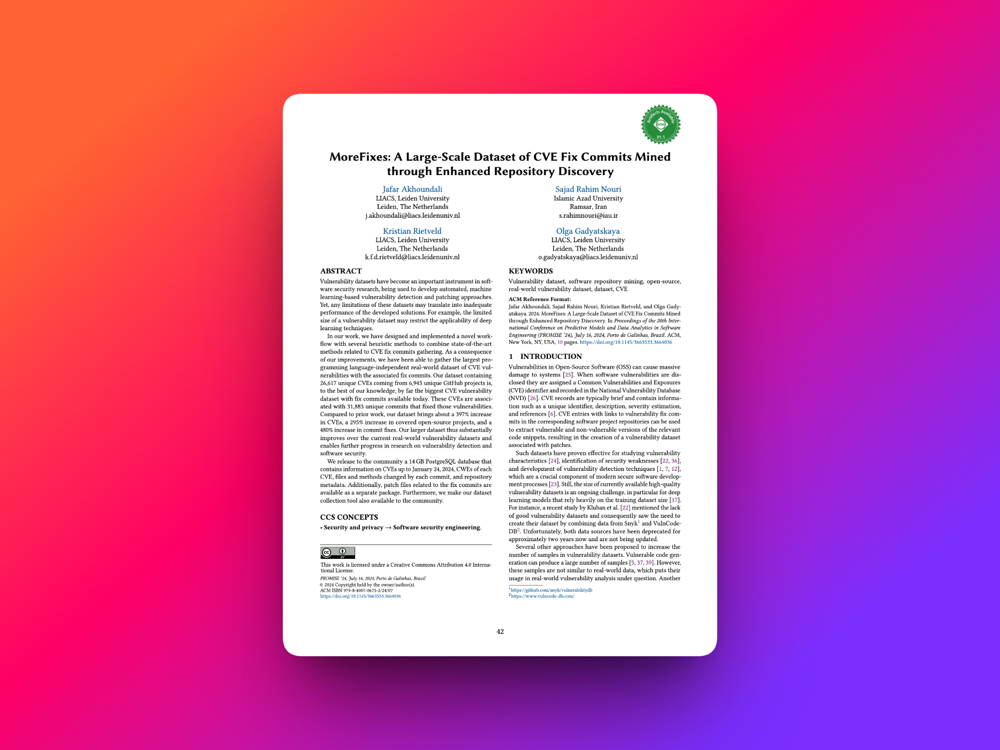
Open-Source Vulnerability Analysis
2025Mined and visualised Python vulnerabilities across open-source repositories for a Computer Software Security course.

YouTube Dual Subtitles
2025Chrome extension that shows real-time translations above YouTube subtitles, designed for language learners and powered by the Gemini API.
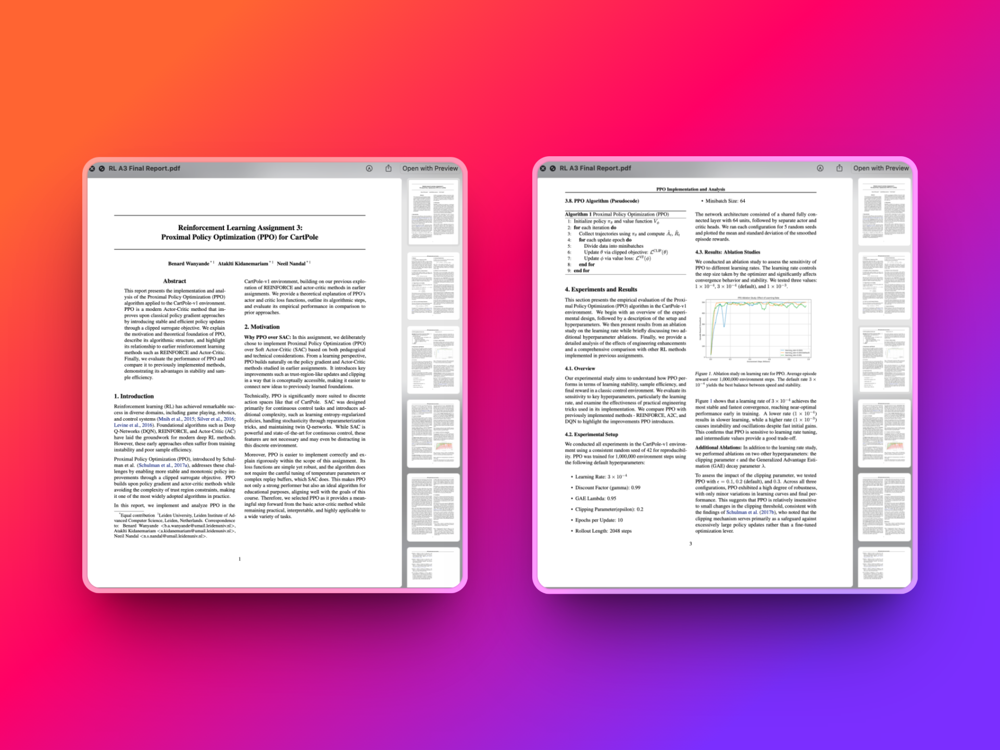
PPO Reinforcement Learning Agent
2025Proximal Policy Optimization on CartPole-v1, comparing stability and sample efficiency against REINFORCE and Actor-Critic.

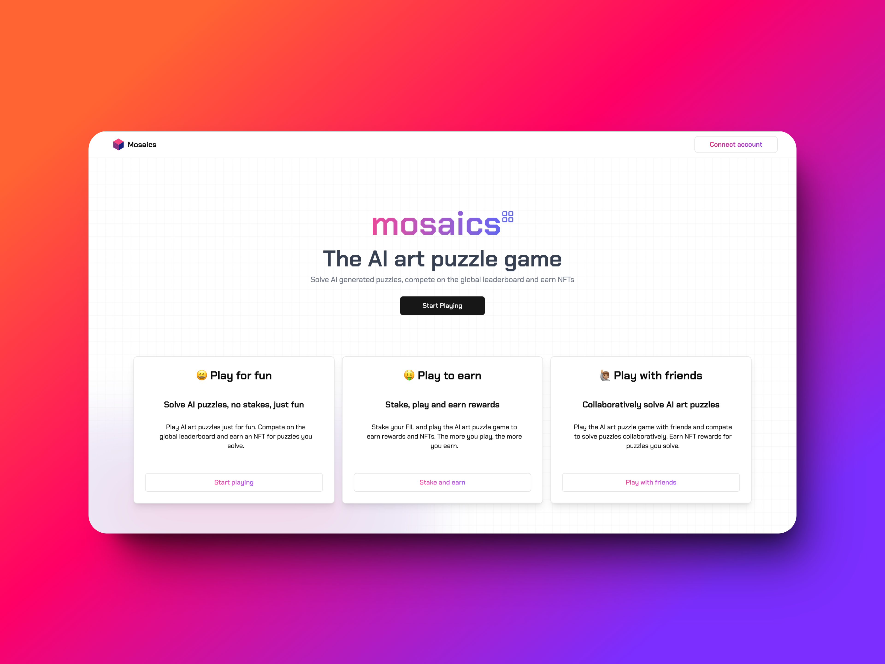
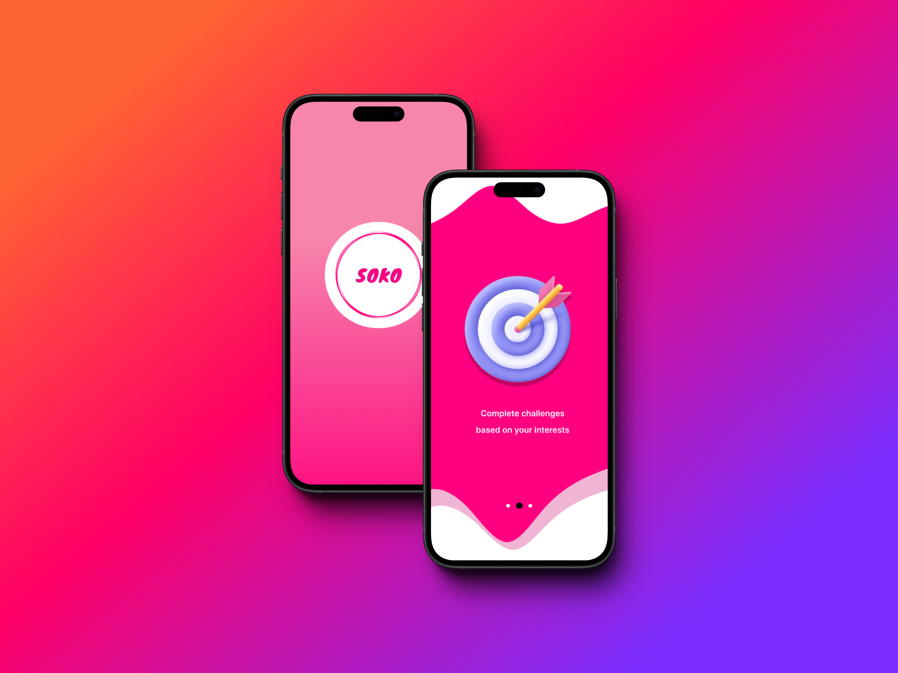
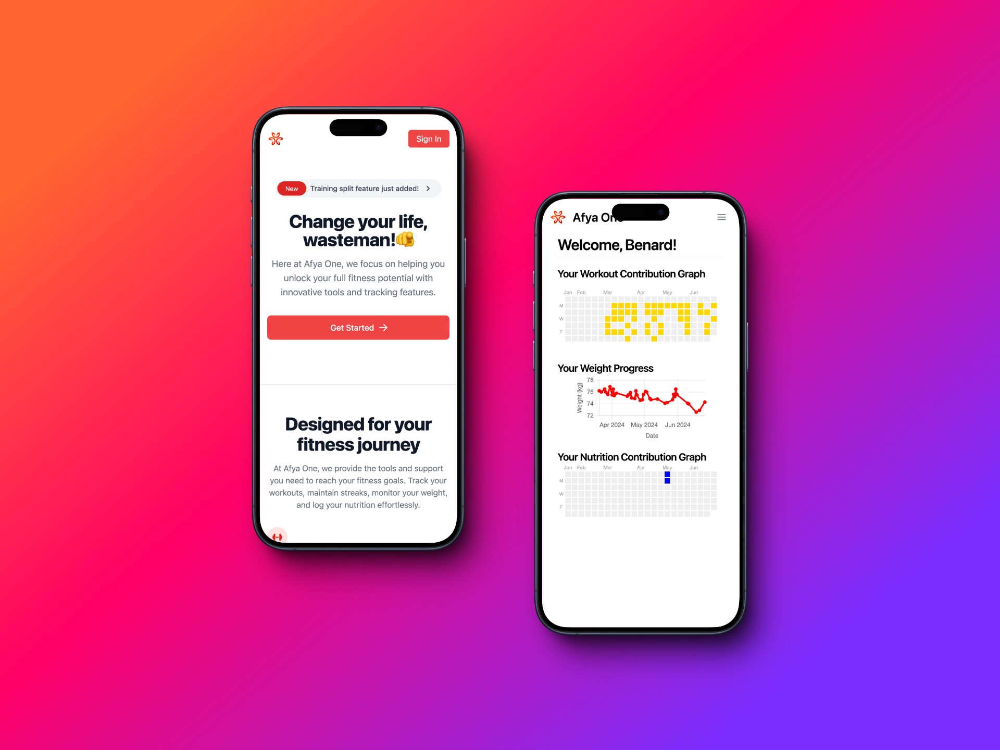
Afya One: Wellness Tracker
2023Health and wellness API and dashboard for tracking weight, fitness and nutrition.
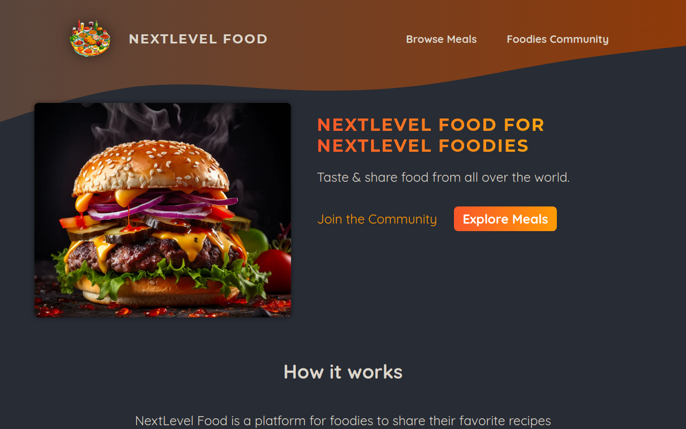
NextLevel: Social Recipe App
2023Community app for foodies to share recipes, with recipe uploads and image hosting on AWS S3.
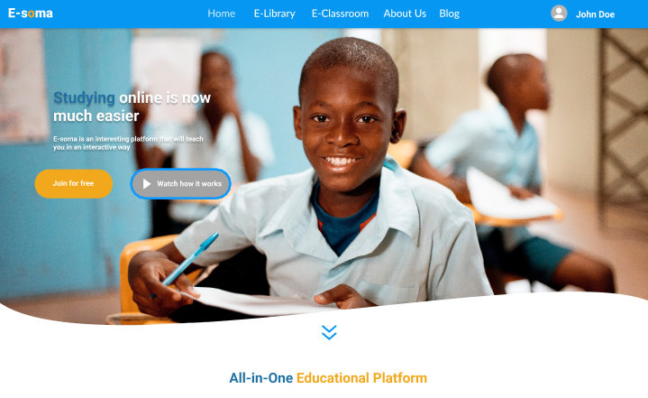
E-Soma: E-Learning Platform
2023E-learning platform giving underprivileged students free access to course material, textbooks and quizzes.
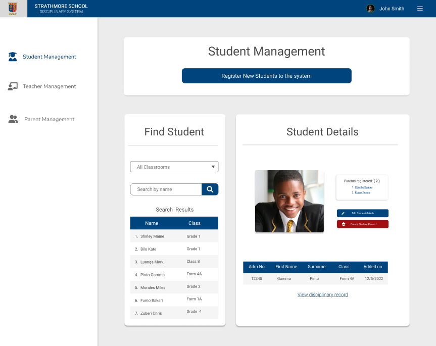
Academic Record System
2023Disciplinary and homework record management system designed and built for Strathmore School.
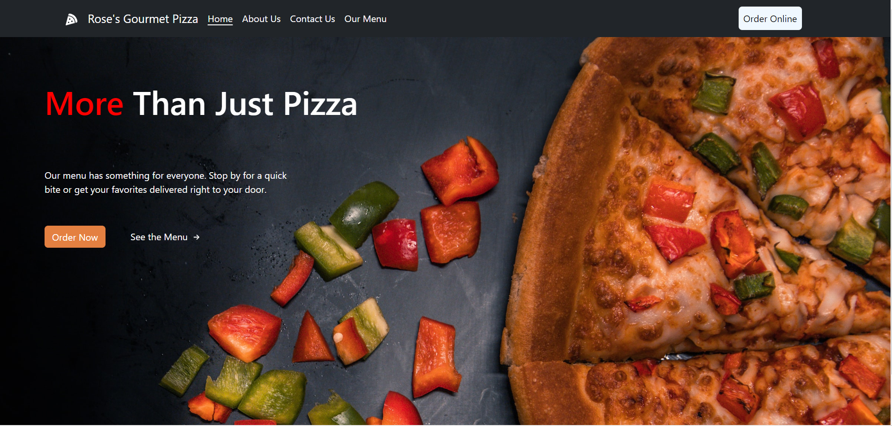
Rose's Gourmet Pizza
2023Website for a gourmet pizza restaurant: browse the menu, order pizzas and contact the restaurant.
Nothing here yet
Try a different filter.